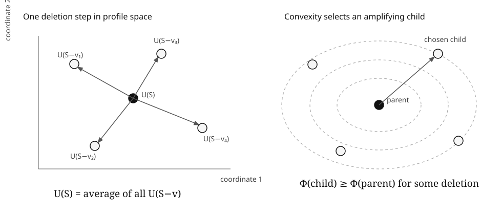
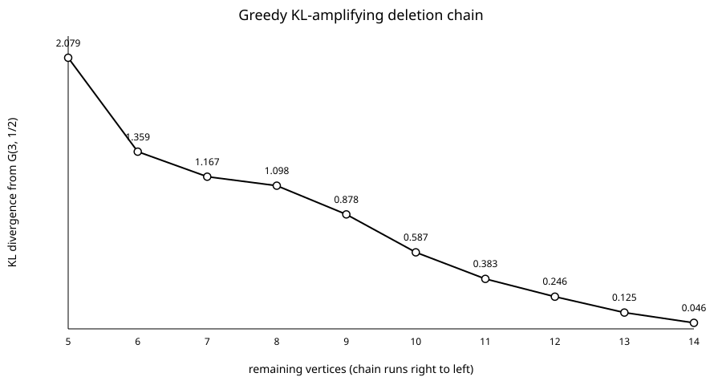

Convex Pattern Amplification Under Deletion
A deterministic selection principle for U-statistics and induced substructure laws
Every finite local-statistic profile considered here is the exact barycenter of its one-point deletion profiles. Convexity therefore guarantees a deletion that does not decrease any chosen convex potential. Repeat the choice and the structure shrinks along a nested deterministic chain while the potential rises.
The mechanism
Fix finitely many local statistics, possibly of different orders. If U(S) is their normalized vector on a finite set S, then whenever every statistic is defined after one deletion, double counting gives the exact identity
The parent is therefore not merely close to the cloud of its children. It is their barycenter. If Φ is convex, Jensen's inequality gives
At least one deletion has potential no smaller than the parent.

Exact quadratic gain
For a reference vector c, set Ec(S)=||U(S)-c||². Define the deletion variance
The average child energy satisfies the exact identity
Hence some deletion gains at least J(S). Along the greedy chain, every leave-one-out fluctuation encountered is converted into deterministic energy gain. This is the finite jackknife interpretation of the theorem.
Graph-pattern consequence
Fix a pattern size r. For a graph induced by vertex set S, let pr(S) be the full probability distribution of unlabeled r-vertex induced graphs. Every coordinate is a U-statistic, so the same deletion identity holds for the entire probability vector.
Three immediate choices of potential give nested induced-subgraph chains with:
- nondecreasing collision energy ΣH pH²;
- nonincreasing Shannon entropy −ΣHpH log pH;
- nondecreasing KL divergence DKL(pr(S) || q) from any fixed positive reference law q.
With q chosen as the 3-vertex law of G(3,½), a deterministic 14-vertex example produced by the bundled script admits a greedy chain whose KL divergence rises from about 0.046 to log 8 ≈ 2.079.

First-principles proof audit
The proof has only three inputs. First, each fixed local subset survives a known number of one-point deletions. Second, that count produces the exact barycenter identity. Third, Jensen turns the barycenter into an extremal child. The quadratic theorem is then the usual centered-square decomposition, with the cross term vanishing because the deletion deviations sum to zero.
The computational harness attacks the normalization and deletion direction rather than "confirming" the theorem. It exhaustively enumerates every labeled graph on 3 through 6 vertices, including all 32,768 six-vertex graphs, verifies the edge/triangle barycenter identity, and checks the greedy quadratic specialization. A second experiment regenerates the KL chain and its CSV/SVG.
Source artifacts
Prior art and sourcing
The paper deliberately separates the potentially useful formulation from its classical ingredients. U-statistics, reverse martingales, Jensen's inequality, graph pattern densities, flag algebras, entropy, and KL convexity are not claimed as inventions here.
- Wassily Hoeffding, “A Class of Statistics with Asymptotically Normal Distribution”, Annals of Mathematical Statistics 19 (1948), 293–325.
- T. C. Christofides and R. J. Serfling, “Maximal inequalities and convergence results for generalized U-statistics”, Journal of Statistical Planning and Inference 24 (1990), 271–286.
- László Lovász, Large Networks and Graph Limits, AMS Colloquium Publications 60 (2012).
- Alexander A. Razborov, “Flag Algebras”, Journal of Symbolic Logic 72 (2007), 1239–1282.
- Tung Nguyen, Alex Scott and Paul Seymour, “Induced subgraph density. VII. The five-vertex path”, Proceedings of the London Mathematical Society 132 (2026).
Novelty posture. A targeted search did not locate the exact package of a simultaneous multi-order local profile, arbitrary convex potential, recursively nested deterministic deletion chain, exact quadratic jackknife gain identity, and induced-pattern entropy/KL corollaries. That is not proof of priority. If an equivalent theorem appears under another language, the novelty claim should be narrowed or withdrawn.
Verification boundary
The Lean companion formalizes the abstract convex-hull selection step and scalar quadratic barycenter identity, with no sorry, admit, or user-declared axiom. The authoring environment used for this draft has no Lean/Lake executable, so the page does not call the formalization kernel-checked. The graph-pattern encoding and combinatorial deletion-counting identity remain conventionally proved in the manuscript.
The pinned independent Lean build is:
lake update
lake exe cache get
lake build